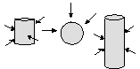
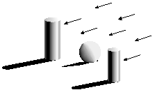
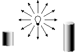
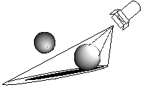
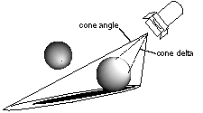

N3DLightType type;
RtPoint from;
RtPoint to;
NXColor color;
RtFloat intensity;
RtFloat coneangle;
RtFloat conedelta;
RtFloat beamdistribution;
struct {
 unsigned int global : 1;
unsigned int global : 1;
 unsigned int on : 1;
unsigned int on : 1;
} lightFlags;
Copyright ©1995 by NeXT Computer, Inc. All Rights Reserved.
| N3DLight |
| Inherits From: | N3DShape : Object | |
| Declared In: | 3Dkit/N3DLight.h |
| Class Description |
| N3DLight is a subclass of N3DShape that acts as a cover for the RenderMan RiLightSource() function. Like other members of the N3DShape family, an N3DLight can be positioned in a 3D coordinate system and managed as part of a shape hierarchy. When called on to render itself, an N3DLight invokes the RiLightSource() function. By this means, an N3DLight applies its lighting effects to its descendants and their peers.
Setting the Light Type A light's type can be set to one of four enumerated values (defined in the header file 3Dkit/next3d.h), illustrated in the following figures: |
|  |
| Figure 17-4. N3D_AmbientLight illuminates all surface evenly |
|  |
| Figure 17-5. N3D_DistantLight illuminates directionally with no falloff over distance |
|  |
| Figure 17-6. N3D_PointLight illuminates from a single point with falloff over distance |
|  |
| Figure 17-7. N3D_SpotLight illuminates from a single point with falloff over both distance and angle
Each of these types corresponds to an RiLightSource() type parameter: |
| N3D_AmbientLight | "ambientlight" | |
| N3D_DistantLight | "distantlight" | |
| N3D_PointLight | "pointlight" | |
| N3D_SpotLight | "spotlight" |
| The other parameters used in the RiLightSource() function call are set using N3DLight methods. Not all parameters apply to all light types: see the method descriptions for specifics on which settings apply to which light types. See The RenderMan Companion for more on light types and other parameters used by the RiLightSource() function.
Note: N3DLight parameters that specify angles are measured in degrees, not radians.
Lights in the Shape Hierarchy Because N3DLight is a subclass of N3DShape, it inherits methods for positioning its instances at any point in space. To do so, you add an N3DLight object to the appropriate position in a shape hierarchy, then apply transformations to position it relative to other N3DShapes. By doing so, you can associate the light source with particular surfaces in a scene.
Global and Local Lights By adding an N3DLight to a camera's global light list, a light source can be made to illuminate all the shapes in a scene. A light that isn't in a camera's global light list remains a local light, illuminating only its descendants and their peers. A light can be in both a shape hierarchy--giving it a position in relation to other objects in a scene--and in a camera's global light list. Alternatively, you can add an instance of N3DLight to the global light list without placing it in a shape hierarchy. A light managed in this way has its origin at the origin of the world coordinate system; any transformations applied will position the light relative to this coordinate system. Use N3DCamera's addLight: method to place a light in a camera's global light list. |
| Instance Variables |
| RtToken lightHandle;
N3DLightType type; RtPoint from; RtPoint to; NXColor color; RtFloat intensity; RtFloat coneangle; RtFloat conedelta; RtFloat beamdistribution; struct {
} lightFlags; |
| lightHandle | RenderMan handle for the light | |
| type | Type of light source | |
| from | Position of the light relative to its origin | |
| to | Direction of a directional light | |
| color | Color of the light | |
| intensity | Intensity of the light | |
| coneangle | Angle of distribution of a spotlight | |
| conedelta | Angle at which a spotlight begins to falloff | |
| beamdistribution | Smoothness of a spotlight's angular falloff | |
| lightFlags.global | YES if the light is turned on by N3DCamera | |
| lightFlags.on | YES if the light is on |
| Method Types |
| Initializing | ||
| Setting light type |
| Setting light parameters |
| Rendering |
| Global |
| Switching on and off | ||
| Setting color |
| Archiving |
| Instance Methods |
| awake |
| Invoked after unarchiving to allow the N3DLight to perform additional initialization. Returns self.
See also: |
| color |
| Returns the light's color. The default value is NX_COLORWHITE.
See also: |
| getConeAngle:coneDelta:beamDistribution: |
| beamDistribution:(RtFloat *)distribution |
| Returns self and, by reference, the values for the unique parameters of a spotlight. See makeSpotFrom:to:coneAngle:coneDelta:beamDistribution:intensity: for a description and illustration of these parameters. By default, coneAngle is 30.0 degrees, deltaAngle is 5.0 degrees, and distribution is 2.0.
See also: |
| getFrom:to: |
| Returns self and, by reference, the values of the parameters defining the direction of a distant light or spot light. fromPoint represents the RiLightSource() from parameter and toPoint represents the to parameter. If the receiver is a point light, fromPoint represents the value of the from parameter, and toPoint may be disregarded. The default settings are (0.0, 0.0, 0.0) for fromPoint and (0.0, 0.0, 1.0) for toPoint. |
| init |
| Initializes and returns the receiver, a newly created instance of N3DLight. Creates the light handle used by the RenderMan renderer, and sets the new light's instance variables to the RenderMan parameter default values. The default type is N3D_AmbientLight, while the other settings are: |
| intensity | 1.0 | |
| color | NX_COLORWHITE | |
| from | (0.0,0.0,0.0) | |
| to | (0.0,0.0,1.0) | |
| coneAngle | 30 degrees | |
| coneDeltaAngle | 5 degrees | |
| beamDistribution | 2.0 |
| Since the default type is N3D_AmbientLight, the last 5 settings are stored but ignored when the light is rendered. |
| intensity |
| Returns the intensity of the N3DLight. RenderMan light sources are usually set to values between 0.0 and 1.0. By default, the intensity is set to 1.0.
See also: |
| isGlobal |
| Returns YES if the receiver is a global light. Global lights are kept in an N3DCamera's light list; they can illuminate the entire scene viewed by the camera. Because N3DLight is a subclass of N3DShape, global N3DLights can be positioned in a scene and associated with specific N3DShapes by placement in the shape hierarchy. Returns NO if the receiver isn't global; a nonglobal light illuminates only its descendants and their peers. A light's global status is set when N3DCamera's addLight: and removeLight: methods are invoked.
By default, an N3DLight isn't global. See also: |
| makeAmbientWithIntensity: |
| Changes the type of the receiver to ambient (N3D_AmbientLight) and sets its intensity to intensity. Returns self.
See also: |
| makeDistantFrom:to:intensity: |
| to:(RtPoint)toPoint intensity:(RtFloat)intensity |
| Changes the type of the receiver to N3D_DistantLight, then sets the light's from point, to point, and intensity. Returns self.
See also: |
| makePointFrom:intensity: |
| Changes the type of the receiver to N3D_PointLight, then sets the light's from point and the intensity. Returns self. |
| makeSpotFrom:to:coneAngle:coneDelta:beamDistribution:intensity: |
| to:(RtPoint)toPoint coneAngle:(RtFloat)coneAngle coneDelta:(RtFloat)deltaAngle beamDistribution:(RtFloat)distribution intensity:(RtFloat)intensity |
| Changes the type of the receiver to N3D_SpotLight, then sets the light's from point, to point, cone angle, cone delta, beam distribution, and intensity. coneAngle is the angle of distribution of the light in degrees: the angle between the center of the area covered by the light and the edge of the light's coverage. deltaAngle is the angle (also in degrees) at which the light's beam begins to fall off. distribution is a factor that determines the rate of falloff. (These parameters are described in greater detail in The RenderMan Companion.) Returns self. |
|  |
| Figure 17-8. N3D_SpotLight's cone angle and cone delta
See also: |
| read: |
| Reads the receiver from the typed stream stream. Returns self.
See also: |
| renderGlobal: |
| Renders the N3DLight as a global light. renderGlobal: is sent to all lights in an N3DCamera's global light list before the world shape is sent a renderSelf: message. Override this method to do unique rendering with a global light: |
 renderGlobal:(N3DCamera *)camera
renderGlobal:(N3DCamera *)camera
 {
{
 /* rendering before the global light is rendered */
/* rendering before the global light is rendered */
 [super renderGlobal:camera];
[super renderGlobal:camera];
 /* rendering after the global light is rendered */
/* rendering after the global light is rendered */
 return self;
return self;
 }
}
| Returns self. |
| renderSelf: |
| Renders an N3DLight at its position in the shape hierarchy. If the receiver is global, this method does nothing; otherwise, it uses the parameters set for the light in a call to the RenderMan RiLightSource() function. Override this method to do unique rendering with a local light. Returns self. |
| setColor: |
| Sets the receiver's color. If theColor contains an alpha component, that component is ignored. Returns self.
See also: |
| setConeAngle:coneDelta:beamDistribution: |
| coneDelta:(RtFloat)coneDelta beamDistribution:(RtFloat)distribution |
| Sets the unique parameters for a spot light to the values supplied. See the method makeSpotFrom:to:coneAngle:coneDelta:beamDistribution:intensity: for a description and illustration of these parameters. If the receiver isn't a spot light, the arguments are stored but have no effect when the light is rendered. Returns self.
See also: |
| setFrom: |
| Sets the value of the light's from point to fromPoint. This method affects all light types that have a from parameter: point lights, distant lights, and spot lights. If the receiver is an ambient light, the argument is stored but has no effect when the light is rendered. Returns self.
See also: makePointFrom:intensity: |
| setFrom:to: |
| Sets the value of the light's from and to points. This method affects light types N3D_DistantLight, N3D_SpotLight, and N3D_PointLight (which has only a from parameter). The arguments are stored even if they have no effect when the light is rendered. Returns self. |
| setGlobal: |
| Invoked by N3DCamera to set the receiver's lightFlags.global instance variable to flag. You should never invoke this method directly; instead, invoke N3DCamera's addLight: method to add a global light and removeLight: to remove a light.
Override this method to adjust the light's parameters or other features when it is added to or removed from the global light list. Returns self. See also: |
| setIntensity: |
| Sets the intensity of the N3DLight and returns self.
See also: |
| setType: |
| Sets the type of the N3DLight object. aType can be one of the following enumerated values (defined in the header file 3Dkit/next3d.h): |
| N3D_AmbientLight N3D_PointLight N3D_DistantLight N3D_SpotLight |
| Returns self.
See also: |
| switchLight: |
| Turns the light on or off. If flag is YES, this method turns the light on; if NO, turns the light off. Returns self. |
| type |
| Returns the receiver's light type. The return value can be one of the following enumerated values (defined in the header file 3Dkit/next3d.h): |
| N3D_AmbientLight N3D_PointLight N3D_DistantLight N3D_SpotLight |
| The default type is N3D_AmbientLight.
See also: |
| write: |
| Writes the receiving light to the typed stream stream. Returns self.
See also: |